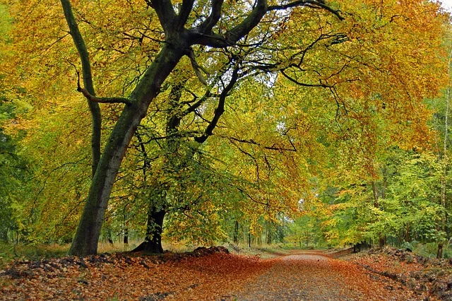

Türkiye, orta enlemlerdeki hemen hiçbir ülkenin sahip olmadığı bir coğrafi çeşitliliğe sahip: üç tarafı denizle çevrili, ortası yüksek plato, kuzeyi dağ sıralarıyla örülü. Bu çeşitlilik, aynı anda dört farklı iklim tipinin ve dolayısıyla dört farklı "mevsim deneyiminin" aynı ülke sınırları içinde yaşanmasına yol açıyor. MGM'nin resmi sınıflandırmasına göre Türkiye'de Akdeniz, Karadeniz, karasal ve Marmara (geçiş) iklimi olmak üzere dört ana iklim tipi görülür.
Dört İklim, Dört Farklı Mevsim Karakteri
Türkiye'nin iklim çeşitliliği her şeyden önce topografyadan kaynaklanır. Kıyı dağları (Toroslar, Kuzey Anadolu Dağları) deniz etkisinin iç kesimlere ulaşmasını engeller; bu yüzden aynı enlemde bile kıyıdan içeri gidildikçe mevsim karakteri tamamen değişir (MGM, "Türkiye İklimi" teknik raporu).
| İklim Tipi | Görüldüğü Bölgeler | Yaz | Kış |
|---|---|---|---|
| Akdeniz | Akdeniz, Ege, Güney Marmara kıyıları | Sıcak ve kurak (yaz yağışı yıllık toplamın %5-6'sı) | Ilık ve yağmurlu; kıyıda kar-don nadir |
| Karadeniz | Karadeniz kıyı şeridi (18 il) | Serin, her mevsim yağışlı — kurak dönem yok | Kıyıda ılık, yüksek kesimde karlı ve soğuk |
| Karasal | İç, Doğu, Güneydoğu Anadolu, Trakya içi | Sıcak ve kurak; yaz-kış farkı en fazla | Sert ve karlı; Doğu Anadolu'da -30°C'ye kadar düşer |
| Marmara (geçiş) | Marmara Bölgesi'nin genel kesimi | Karadeniz'den daha kurak, Akdeniz'den daha serin | Akdeniz kadar ılık, karasal kadar sert değil |
Bu farklılık somut rakamlara da yansıyor: Karadeniz'in Doğu kesiminde yıllık yağış 1.590 mm'ye (bazen 2.244 mm'ye) ulaşabilirken, İç Anadolu'da bu değer 400 mm'nin biraz üzerinde kalır. Ocak ayı ortalama sıcaklığı Akdeniz kıyısında 10°C civarındayken, Doğu Anadolu'da -4,2°C'ye kadar düşer (MGM verileri; Türkiye İklimi, Vikipedi).
Bölgelere Göre Yağış Rejimi: Mevsim Aynı, Takvim Farklı
Türkiye'de en fazla yağışın hangi mevsimde düştüğü bölgeden bölgeye tamamen değişir; bu, "mevsim" kavramının Türkiye içinde tek bir anlam taşımadığının en çarpıcı göstergesidir:
- Akdeniz Bölgesi: Yağışın büyük kısmı kışın düşer; yaz tamamen kuraktır
- Karadeniz Bölgesi: Her mevsim yağışlıdır; Doğu ve Batı Karadeniz'de en fazla yağış sonbaharda, en azı ilkbaharda görülür
- Doğu ve Güneydoğu Anadolu: En fazla yağış ilkbaharda alınır; yaz ve kış nispeten kuru geçer
- İç Anadolu: Yağışlar ilkbahar ve kışa dağılır; yaz kuraklığı hakimdir
Bu farklı rejimler tarımsal takvimi de doğrudan şekillendirir: Tarım ve Orman Bakanlığı'nın Ekim 2025 fenolojik izleme raporuna göre aynı dönemde Güneydoğu Anadolu'da ceviz, pamuk, nar ve zeytin hasadı sürürken; Ege'de zeytin ve narenciye hasadı başlıyor, İç Anadolu'da şeker pancarı ve mısır hasadı devam ediyordu. Aynı takvim yaprağı, üç farklı bölgede üç farklı tarımsal mevsimi temsil ediyor.
2025-2026: Isınan Kışlar, Değişen Yağış Rejimi
MGM'nin "2025 Yılı Türkiye İklim Değerlendirmesi" raporu, Türkiye'de mevsimlerin son yıllarda nasıl kaydığına dair somut veriler sunuyor. 2025 yılı Türkiye ortalama sıcaklığı 15,1°C ile 1991-2020 ortalaması olan 13,9°C'nin 1,2°C üzerinde gerçekleşerek son 55 yılın en sıcak beşinci yılı oldu. 25 Temmuz 2025'te Silopi (Şırnak)'de ölçülen 50,5°C, Türkiye sıcaklık rekoru olarak kayda geçti.
Yağış tarafında ise tablo tam tersi bir yön izledi: 2025 yılı Türkiye alansal yağışı 414,9 mm ile 1991-2020 ortalaması olan 573,4 mm'nin belirgin ölçüde altında kaldı — yaşanan kuraklık su kaynakları, tarım ve enerji sektörünü olumsuz etkiledi. Buna karşın 2026 ilkbaharı tam zıt bir tablo çizdi: Türkiye genelinde ilkbahar yağışı 263,2 mm'ye ulaştı ve bu, son 66 yılın en yüksek ilkbahar yağışı olarak kayıtlara geçti; en fazla artış Güneydoğu Anadolu'da görüldü ve Akdeniz ile Güneydoğu Anadolu bölgeleri kendi tarihlerindeki en yüksek ilkbahar yağışını aldı.
📊 MGM 2025-2026 Öne Çıkan Veriler
- 2025 Türkiye ortalama sıcaklığı: 15,1°C (normalin 1,2°C üzeri) — son 55 yılın 5. en sıcak yılı
- 2025 sıcaklık rekoru: 50,5°C, Silopi (Şırnak), 25 Temmuz
- 2025 en düşük sıcaklık: -32,6°C, Şubat, Horasan (Erzurum)
- 2025 yıllık yağış: 414,9 mm — normalin (573,4 mm) belirgin altında, kuraklık yılı
- 2026 ilkbahar yağışı: 263,2 mm — son 66 yılın en yükseği
- 2025 ekstrem olay sayısı: 1.011 (fırtına, şiddetli yağış/sel, dolu, kar, don, yıldırım, heyelan, hortum)
Kaynak: T.C. Çevre, Şehircilik ve İklim Değişikliği Bakanlığı / MGM, "2025 Yılı Türkiye İklim Değerlendirmesi"
İklim Projeksiyonları: Mevsimler Nasıl Değişecek?
MGM'nin RegCM4.3.4 bölgesel modeliyle ürettiği "Türkiye İçin İklim Değişikliği Projeksiyonları" (TR2015-CC) raporu, 2016-2099 dönemi için iki senaryo sunuyor. RCP4.5 (orta senaryo) altında Türkiye yıllık ortalama sıcaklığının 1,5-2,6°C artması bekleniyor. Yağış tarafında net bir artış ya da azalış trendi olmamakla birlikte, RCP4.5'e göre yıllık toplam yağışta ortalama %3-6 azalma; RCP8.5 (yüksek emisyon senaryosu) altında ise yüzyılın ikinci yarısında %-18'e kadar varan azalma ihtimali öngörülüyor.
Bu projeksiyonların pratik anlamı: mevsimlerin başlangıç tarihleri değişmeyecek (bunlar gökbilimsel sabitlerdir) ama Türkiye'de hissedilen mevsim karakteri kayacak — daha sıcak ve muhtemelen daha kurak yazlar, daha ılık kışlar, düzensizleşen yağış rejimleri. MGM'nin kendi ifadesiyle "yağış düzensizliklerinin artma eğiliminde olduğu" görülüyor; yani ortalamalar yavaş değişirken, yıldan yıla yaşanan uç olaylar (2025'in kuraklığı ile 2026 ilkbaharının rekor yağışı gibi) daha sık görülebiliyor.
Mevsim Geçişlerinin Tarım ve Gündelik Yaşama Etkisi
Türkiye'de mevsim geçişleri, iklim çeşitliliği sayesinde ekonomik olarak da avantaja çevrilir. Farklı bölgelerin hasat dönemlerinin çakışmaması, yıl boyunca sürekli taze ürün arzı sağlar: kışın Akdeniz'de narenciye hasat edilirken, ilkbaharda Ege'de sebze, yazda İç Anadolu'da tahıl, sonbaharda Karadeniz'de fındık toplanır.
- Zirai don riski: MGM'nin fenolojik izleme raporlarına göre İç ve Güneydoğu Anadolu'da kuraklık kaynaklı verim kaybı riski düzenli olarak takip ediliyor; sulanamayan hububat alanları en hassas kesim
- Turizm mevsimselliği: Akdeniz ve Ege kıyılarında "yaz turizmi" pencere si Nisan-Kasım arasına kadar uzayabiliyor; ancak ısınan kışlar kayak turizmi açısından yüksek rakımlı merkezleri (Palandöken, Uludağ) daha avantajlı kılıyor
- Su yönetimi: "2025-2026 su yılı" (1 Ekim-30 Eylül) verileri, baraj doluluk oranlarının bölgesel yağış farklılıklarına doğrudan bağlı olduğunu gösteriyor; kurak geçen 2025'in ardından 2026 ilkbaharındaki rekor yağış su kaynakları açısından telafi edici oldu
- Enerji tüketimi: Mevsim geçişlerindeki sıcaklık dalgalanmaları (aşırı sıcak yaz günleri, beklenmedik kış soğukları) elektrik talebinde belirgin pik noktaları oluşturuyor
📚 Kaynaklar ve Daha Fazlası İçin
- T.C. Çevre, Şehircilik ve İklim Değişikliği Bakanlığı / MGM — "2025 Yılı Türkiye İklim Değerlendirmesi" raporu
- Meteoroloji Genel Müdürlüğü (MGM) — "Türkiye İklimi" teknik raporu
- MGM — "Türkiye İçin İklim Değişikliği Projeksiyonları" (TR2015-CC)
- MGM — Alansal Mevsimlik Yağış Raporu (2026 İlkbahar)
- MGM — Aylık Sıcaklık ve Yağış Analizleri (2025-2026)
- T.C. Tarım ve Orman Bakanlığı — İklim, Fenolojik Durum ve Sulama İzleme İstatistikleri, Ekim 2025
- Türkiye İklimi, Vikipedi — Köppen-Geiger sınıflandırmasına göre bölgesel iklim verileri